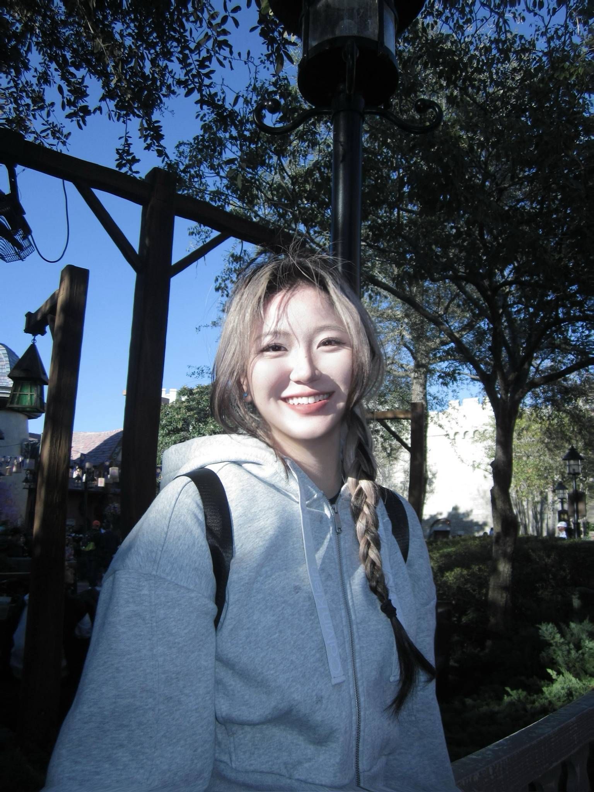

<!doctype html>
<html lang="en">
<head>
  <meta charset="UTF-8" />
  <meta name="viewport" content="width=device-width, initial-scale=1.0" />
  <meta name="description" content="Nan Yao portfolio: AI ecosystem research, venture operations, product-minded project management, and bilingual content strategy." />
  <meta property="og:title" content="Nan Yao | AI Ecosystem & Venture Operations" />
  <meta property="og:description" content="Bilingual AI and venture operator turning research, deal flow, and content systems into decision-ready workflows." />
  <meta property="og:image" content="./profile01.JPG" />
  <meta property="og:type" content="website" />
  <title>Nan Yao | AI Ecosystem & Venture Operations</title>
  <script src="https://cdn.tailwindcss.com"></script>
  <script>
    tailwind.config = {
      theme: {
        extend: {
          fontFamily: {
            sans: ['Inter', 'ui-sans-serif', 'system-ui', 'BlinkMacSystemFont', 'Segoe UI', 'sans-serif'],
            display: ['"Instrument Sans"', 'Inter', 'ui-sans-serif', 'system-ui', 'sans-serif'],
          },
          colors: {
            ink: '#111315',
            paper: '#f7f4ef',
            line: '#ded8ce',
            moss: '#596b56',
            clay: '#a15c42',
            ocean: '#245a7b',
            gold: '#b58b42',
          },
          boxShadow: {
            quiet: '0 24px 80px rgba(17, 19, 21, 0.08)',
          },
        },
      },
    };
  </script>
  <script src="https://cdn.jsdelivr.net/npm/lucide@latest/dist/lucide.min.js"></script>
  <style>
    @import url('https://fonts.googleapis.com/css2?family=Instrument+Sans:wght@500;600;700;800&family=Inter:wght@400;500;600;700;800&display=swap');

    :root {
      color-scheme: light;
      scroll-behavior: smooth;
    }

    body {
      background:
        radial-gradient(circle at 12% 0%, rgba(181, 139, 66, 0.16), transparent 28rem),
        radial-gradient(circle at 88% 8%, rgba(36, 90, 123, 0.13), transparent 28rem),
        #f7f4ef;
      color: #111315;
    }

    .noise::before {
      position: fixed;
      inset: 0;
      z-index: -1;
      pointer-events: none;
      content: "";
      opacity: 0.18;
      background-image: url("data:image/svg+xml,%3Csvg viewBox='0 0 180 180' xmlns='http://www.w3.org/2000/svg'%3E%3Cfilter id='n'%3E%3CfeTurbulence type='fractalNoise' baseFrequency='.75' numOctaves='3' stitchTiles='stitch'/%3E%3C/filter%3E%3Crect width='180' height='180' filter='url(%23n)' opacity='.42'/%3E%3C/svg%3E");
    }

    .reveal {
      opacity: 0;
      transform: translateY(18px);
      transition: opacity 720ms ease, transform 720ms ease;
    }

    .reveal.is-visible {
      opacity: 1;
      transform: translateY(0);
    }

    .glass {
      background: rgba(255, 252, 247, 0.72);
      border: 1px solid rgba(222, 216, 206, 0.9);
      backdrop-filter: blur(18px);
    }

    .soft-grid {
      background-image:
        linear-gradient(rgba(17, 19, 21, 0.055) 1px, transparent 1px),
        linear-gradient(90deg, rgba(17, 19, 21, 0.055) 1px, transparent 1px);
      background-size: 44px 44px;
      mask-image: linear-gradient(to bottom, black, transparent 78%);
    }

    .portrait-mask {
      clip-path: polygon(0 0, 100% 7%, 100% 100%, 0 93%);
    }

    @media (prefers-reduced-motion: reduce) {
      *, ::before, ::after {
        animation-duration: 0.001ms !important;
        animation-iteration-count: 1 !important;
        scroll-behavior: auto !important;
        transition-duration: 0.001ms !important;
      }

      .reveal {
        opacity: 1;
        transform: none;
      }
    }
  </style>
</head>
<body class="noise font-sans antialiased selection:bg-gold/20 selection:text-ink">
  <div id="app"></div>

  <script>
    const iconsCss = 'i[data-lucide]{display:inline-flex;align-items:center;justify-content:center;font-style:normal}i[data-lucide="mail"]::before{content:"Email"}i[data-lucide="linkedin"]{background-image:url("./linkedin logo.png");background-size:contain;background-repeat:no-repeat;background-position:center}i[data-lucide="linkedin"]::before{content:""}i[data-lucide="globe"]::before{content:"Lang"}i[data-lucide="phone"]::before{content:"Tel"}i[data-lucide="map-pin"]::before{content:"Loc"}i[data-lucide="award"]::before{content:"Award"}i[data-lucide="book-open"]::before{content:"Edu"}i[data-lucide="briefcase-business"]::before{content:"Exp"}i[data-lucide="file-text"]::before{content:"CV"}i[data-lucide="external-link"]::before{content:"Link"}i[data-lucide="arrow-up-right"]::before{content:"Open"}i[data-lucide="sparkles"]::before{content:"Skills"}i[data-lucide="layers-3"]::before{content:"Work"}i[data-lucide="radar"]::before{content:"AI"}i[data-lucide="workflow"]::before{content:"Ops"}i[data-lucide="newspaper"]::before{content:"Media"}i[data-lucide="chevron-up"]::before{content:"Top"}';
    document.head.insertAdjacentHTML("beforeend", "<style>" + iconsCss + "</style>");

    const content = {
      en: {
        name: "Nan Yao",
        shortName: "Nan",
        title: "AI Ecosystem Researcher · Venture Operations Builder · Product-minded Project Manager",
        eyebrow: "Bilingual operator across AI, venture, and media",
        location: "New York, NY",
        availability: "Open to AI product, venture platform, and investment operations roles",
        about:
          "I turn messy AI ecosystem signals into clear research, workflows, and content systems. Currently pursuing an M.S. in Project Management at NYU, I bring hands-on experience across venture capital, AI media, growth operations, and public AI education programs.",
        nav: {
          work: "Work",
          projects: "Projects",
          education: "Education",
          skills: "Stack",
          contact: "Contact",
          resume: "CV",
          email: "Email",
          back: "Top",
          projectCta: "Open case",
        },
        contact: {
          phone: "+1 (626) 230-7307",
          email: "yaonan1127@gmail.com",
          linkedin: "https://www.linkedin.com/in/yaonanstarry",
        },
        metrics: [
          { value: "400K+", label: "Top social post views" },
          { value: "40%", label: "Editorial workflow efficiency gain" },
          { value: "4", label: "AI, VC, media, and education contexts" },
        ],
        focus: [
          {
            icon: "radar",
            title: "AI ecosystem intelligence",
            text: "Researching global startups, product shifts, founder narratives, and commercialization signals.",
          },
          {
            icon: "workflow",
            title: "Investment operations",
            text: "Building lightweight tagging, tracking, and memo workflows that make deal inputs easier to trust.",
          },
          {
            icon: "newspaper",
            title: "Content-led growth",
            text: "Translating complex technology into high-signal bilingual stories, newsletters, and campaign assets.",
          },
        ],
        experience: [
          {
            company: "Monolith Capital",
            role: "Investment Operations Intern",
            location: "New York, NY",
            period: "Oct. 2025 - Present",
            tags: ["VC ops", "AI datasets", "Research systems"],
            points: [
              "Built internal tracking and tagging templates to keep investment memo inputs, startup profiles, and deal-analysis materials consistent.",
              "Structured large datasets on startup financing and AI products, turning scattered research into reusable decision-ready views.",
              "Managed confidential Mandarin and English research workstreams with clear documentation and repeatable operating rhythm.",
            ],
          },
          {
            company: "Crossing, AI Media Startup",
            role: "Content Editor Intern",
            location: "Shanghai, China",
            period: "Apr. 2025 - Sep. 2025",
            tags: ["AI media", "Editorial systems", "Market research"],
            points: [
              "Researched global AI startup ecosystems and emerging technologies for podcast articles, newsletters, and industry features.",
              "Created standardized review templates that lifted content output efficiency by about 40%.",
              "Connected founder/product context with reader-friendly narratives for WeChat and cross-platform publishing.",
            ],
          },
          {
            company: "Linear Capital",
            role: "Marketing Operations Intern",
            location: "Shanghai, China",
            period: "Nov. 2024 - Apr. 2025",
            tags: ["Venture platform", "Brand ops", "Events"],
            points: [
              "Synthesized industry insights and global AI trends for venture brand communications and original content planning.",
              "Supported Demo Day planning, partner coordination, and branded materials for founder-facing programs.",
            ],
          },
          {
            company: "36Kr - Waves",
            role: "Media Operations Intern",
            location: "Beijing, China",
            period: "Jun. 2024 - Oct. 2024",
            tags: ["Growth content", "Rednote", "SOP"],
            points: [
              "Led Rednote content planning, with the strongest post reaching 400K+ views and 3,000+ interactions.",
              "Built SOPs for content workflows and data management so social operations could scale with clearer feedback loops.",
            ],
          },
        ],
        projects: [
          {
            name: "Wavo! AI Open Course Program",
            role: "Deputy Project Lead",
            period: "Oct. 2024 - Dec. 2024",
            link: "https://mp.weixin.qq.com/s/0VYOR1ZFb41HbA2wt7oznQ",
            desc: "Co-led a public AI education initiative that helped non-technical learners build AI products, coordinating partners including Volcano Engine, ZhenFund, Zhipu AI, and Devv.ai.",
            impact: "AI literacy program for builders outside traditional technical backgrounds",
          },
          {
            name: "Waves Odyssey",
            role: "Project Assistant",
            period: "Jul. 2024 - Aug. 2024",
            link: "https://mp.weixin.qq.com/s/zEojryWXUlqI9le5rpOWgA",
            desc: "Supported an enterprise overseas-expansion research program through market analysis, itinerary design, participant screening, and visual materials.",
            impact: "Market research plus execution support for global business exploration",
          },
        ],
        education: [
          {
            school: "New York University",
            degree: "M.S. in Project Management",
            period: "2025 - Present",
          },
          {
            school: "BNU-HKBU United International College",
            degree: "B.A. in Public Relations & Advertising",
            period: "2021 - 2025",
            awards: "Second-Class Scholarship",
          },
          {
            school: "The University of Hong Kong",
            degree: "Summer Institute · Introduction to the World of Business Media",
            period: "Summer 2024",
            awards: "Outstanding Performance · First Place Prize",
          },
          {
            school: "University of Edinburgh",
            degree: "Summer School · Business Communication and Social Media",
            period: "Summer 2023",
          },
        ],
        skills: [
          { name: "AI & Agents", items: ["ChatGPT", "Claude", "Gemini", "Cursor", "Midjourney", "AI product research"] },
          { name: "Venture & Ops", items: ["Deal flow tracking", "Investment memos", "SOP design", "Dataset structuring", "Event operations"] },
          { name: "Growth & Media", items: ["Newsletter writing", "Podcast articles", "WeChat", "Rednote", "Campaign planning"] },
          { name: "Languages", items: ["Mandarin native", "English professional", "Cantonese"] },
        ],
      },
      zh: {
        name: "姚楠 Nan Yao",
        shortName: "姚楠",
        title: "AI 生态研究 · 创投运营 · 产品化项目管理",
        eyebrow: "连接 AI、创投与内容增长的双语运营者",
        location: "纽约",
        availability: "关注 AI 产品、创投平台、投资运营方向机会",
        about:
          "我擅长把复杂、零散的 AI 生态信息整理成可判断、可复用、可传播的研究与运营系统。目前就读于纽约大学项目管理硕士，过往经历覆盖 VC、AI 媒体、增长运营与公益 AI 教育项目。",
        nav: {
          work: "经历",
          projects: "项目",
          education: "教育",
          skills: "能力",
          contact: "联系",
          resume: "简历",
          email: "邮件",
          back: "顶部",
          projectCta: "查看案例",
        },
        contact: {
          phone: "18926078654",
          wechat: "18926078654",
          email: "yaonan1127@gmail.com",
          linkedin: "https://www.linkedin.com/in/yaonanstarry",
        },
        metrics: [
          { value: "40w+", label: "小红书单篇最高浏览量" },
          { value: "40%", label: "内容流程效率提升" },
          { value: "4", label: "AI、VC、媒体、教育场景" },
        ],
        focus: [
          {
            icon: "radar",
            title: "AI 生态研究",
            text: "持续跟踪全球 AI 创业公司、产品变化、创始人叙事与商业化信号。",
          },
          {
            icon: "workflow",
            title: "投资运营系统",
            text: "搭建轻量标签、跟踪与 memo 工作流，让 deal 输入更清晰、更可复用。",
          },
          {
            icon: "newspaper",
            title: "内容增长表达",
            text: "把复杂技术与商业议题转译成高信号的双语文章、newsletter 与活动素材。",
          },
        ],
        experience: [
          {
            company: "Monolith 砺思资本",
            role: "投资运营实习生",
            location: "纽约",
            period: "2025.10 - 至今",
            tags: ["VC 运营", "AI 数据集", "研究系统"],
            points: [
              "搭建并维护内部跟踪与标签模板，使投资 memo、初创公司档案和 deal 分析材料保持统一结构。",
              "整理初创公司融资与 AI 产品相关大型数据集，将分散研究转化为可复用、可判断的视图。",
              "在严格保密要求下，独立推进中英双语高容量研究任务，并沉淀清晰文档与节奏。",
            ],
          },
          {
            company: "十字路口 Crossing",
            role: "内容编辑实习生",
            location: "上海",
            period: "2025.04 - 2025.09",
            tags: ["AI 媒体", "编辑流程", "市场研究"],
            points: [
              "研究全球 AI 初创生态与新兴技术，支持播客文章、newsletter 与行业专题策划。",
              "制定标准化审核模板，使内容输出效率提升约 40%。",
              "将创始人、产品与行业背景转译为更适合微信及多平台传播的内容叙事。",
            ],
          },
          {
            company: "线性资本 Linear Capital",
            role: "市场运营实习生",
            location: "上海",
            period: "2024.11 - 2025.04",
            tags: ["创投平台", "品牌运营", "活动"],
            points: [
              "整理全球 AI 趋势与行业洞察，支持创投品牌传播与原创内容选题。",
              "协助 Demo Day 活动策划、合作方协调与面向创业者项目的品牌材料制作。",
            ],
          },
          {
            company: "36氪 Waves 投资报道部",
            role: "媒体运营实习生",
            location: "北京",
            period: "2024.06 - 2024.10",
            tags: ["增长内容", "小红书", "SOP"],
            points: [
              "主导小红书内容规划，单篇最高 40w+ 浏览量、3,000+ 互动。",
              "建立内容工作流与数据管理 SOP，让社媒运营具备更清晰的反馈闭环。",
            ],
          },
        ],
        projects: [
          {
            name: "Wavo! AI 开放课计划",
            role: "项目第二负责人",
            period: "2024.10 - 2024.12",
            link: "https://mp.weixin.qq.com/s/0VYOR1ZFb41HbA2wt7oznQ",
            desc: "共同负责公益 AI 教育项目，帮助非技术背景用户理解并搭建 AI 产品，协调火山引擎、真格基金、智谱 AI、Devv.ai 等合作伙伴。",
            impact: "面向非传统技术背景 builders 的 AI literacy 项目",
          },
          {
            name: "Waves Odyssey",
            role: "项目助理",
            period: "2024.07 - 2024.08",
            link: "https://mp.weixin.qq.com/s/zEojryWXUlqI9le5rpOWgA",
            desc: "支持企业出海研究项目，参与市场分析、行程设计、参与者筛选与宣传材料视觉制作。",
            impact: "结合市场研究与执行落地的全球化商业探索项目",
          },
        ],
        education: [
          {
            school: "纽约大学",
            degree: "项目管理硕士 M.S.",
            period: "2025 - 至今",
          },
          {
            school: "北京师范大学-香港浸会大学联合国际学院",
            degree: "公关与广告学士 B.A.",
            period: "2021 - 2025",
            awards: "二等奖学金",
          },
          {
            school: "香港大学",
            degree: "Summer Institute · Introduction to the World of Business Media",
            period: "2024 夏",
            awards: "Outstanding Performance · First Place Prize",
          },
          {
            school: "爱丁堡大学",
            degree: "Summer School · Business Communication and Social Media",
            period: "2023 夏",
          },
        ],
        skills: [
          { name: "AI 与 Agent", items: ["ChatGPT", "Claude", "Gemini", "Cursor", "Midjourney", "AI 产品研究"] },
          { name: "创投与运营", items: ["Deal flow 跟踪", "投资 memo", "SOP 设计", "数据集结构化", "活动运营"] },
          { name: "增长与媒体", items: ["Newsletter", "播客文章", "微信公众号", "小红书", "Campaign 策划"] },
          { name: "语言", items: ["普通话母语", "英语专业工作", "粤语"] },
        ],
      },
    };

    let lang = localStorage.getItem("portfolio-lang") || "en";

    function icon(name, classes = "w-4 h-4") {
      return `<i data-lucide="${name}" class="${classes}" aria-hidden="true"></i>`;
    }

    function chips(items, tone = "border-line/80 bg-white/45 text-ink/75") {
      return items.map((item) => `<span class="rounded-full border px-3 py-1 text-xs font-semibold ${tone}">${item}</span>`).join("");
    }

    function renderPage(t) {
      const navLinks = [
        ["#work", t.nav.work],
        ["#projects", t.nav.projects],
        ["#education", t.nav.education],
        ["#skills", t.nav.skills],
        ["#contact", t.nav.contact],
      ];

      const focus = t.focus.map((item, index) => `
        <article class="reveal glass rounded-[8px] p-5 shadow-quiet" style="transition-delay:${index * 80}ms">
          <div class="mb-5 flex h-10 w-10 items-center justify-center rounded-full bg-ink text-paper">${icon(item.icon, "w-5 h-5")}</div>
          <h3 class="font-display text-lg font-extrabold text-ink">${item.title}</h3>
          <p class="mt-3 text-sm leading-7 text-ink/68">${item.text}</p>
        </article>
      `).join("");

      const metrics = t.metrics.map((metric) => `
        <div class="border-l border-line pl-5">
          <p class="font-display text-3xl font-extrabold tracking-tight text-ink">${metric.value}</p>
          <p class="mt-1 text-xs font-semibold uppercase leading-5 tracking-[0.18em] text-ink/46">${metric.label}</p>
        </div>
      `).join("");

      const experience = t.experience.map((job, index) => `
        <article class="reveal grid gap-5 border-t border-line py-9 md:grid-cols-[11rem_1fr]" style="transition-delay:${Math.min(index * 70, 220)}ms">
          <div>
            <p class="text-sm font-bold text-clay">${job.period}</p>
            <p class="mt-2 text-sm text-ink/56">${job.location}</p>
          </div>
          <div>
            <div class="flex flex-col gap-3 lg:flex-row lg:items-start lg:justify-between">
              <div>
                <h3 class="font-display text-2xl font-extrabold tracking-tight text-ink">${job.role}</h3>
                <p class="mt-1 text-base font-semibold text-ocean">${job.company}</p>
              </div>
              <div class="flex flex-wrap gap-2 lg:justify-end">${chips(job.tags, "border-ocean/20 bg-ocean/10 text-ocean")}</div>
            </div>
            <ul class="mt-6 grid gap-3">
              ${job.points.map((point) => `
                <li class="flex gap-3 text-[15px] leading-7 text-ink/70">
                  <span class="mt-3 h-1.5 w-1.5 flex-none rounded-full bg-gold"></span>
                  <span>${point}</span>
                </li>
              `).join("")}
            </ul>
          </div>
        </article>
      `).join("");

      const projects = t.projects.map((project, index) => `
        <a href="${project.link}" target="_blank" rel="noopener noreferrer" class="reveal group flex min-h-[21rem] flex-col justify-between rounded-[8px] border border-line bg-white/60 p-6 shadow-quiet transition duration-300 hover:-translate-y-1 hover:border-ocean/40 hover:bg-white" style="transition-delay:${index * 90}ms">
          <div>
            <div class="mb-8 flex items-start justify-between gap-4">
              <div>
                <p class="text-xs font-bold uppercase tracking-[0.18em] text-clay">${project.role} · ${project.period}</p>
                <h3 class="mt-4 font-display text-3xl font-extrabold leading-tight tracking-tight text-ink">${project.name}</h3>
              </div>
              <span class="flex h-10 w-10 flex-none items-center justify-center rounded-full border border-line bg-paper text-ink transition group-hover:border-ocean group-hover:text-ocean">${icon("arrow-up-right", "w-5 h-5")}</span>
            </div>
            <p class="text-[15px] leading-7 text-ink/68">${project.desc}</p>
          </div>
          <div class="mt-8 border-t border-line pt-5">
            <p class="text-xs font-bold uppercase leading-5 tracking-[0.18em] text-ink/42">${project.impact}</p>
          </div>
        </a>
      `).join("");

      const education = t.education.map((edu, index) => `
        <article class="reveal border-t border-line py-6" style="transition-delay:${index * 55}ms">
          <div class="flex flex-col gap-2 sm:flex-row sm:items-start sm:justify-between">
            <div>
              <h3 class="font-display text-xl font-extrabold text-ink">${edu.school}</h3>
              <p class="mt-2 text-sm leading-6 text-ink/66">${edu.degree}</p>
            </div>
            <p class="text-sm font-bold text-clay sm:text-right">${edu.period}</p>
          </div>
          ${edu.awards ? `<p class="mt-4 inline-flex items-center gap-2 rounded-full border border-gold/20 bg-gold/10 px-3 py-1 text-xs font-bold text-gold">${icon("award", "w-4 h-4")} ${edu.awards}</p>` : ""}
        </article>
      `).join("");

      const skills = t.skills.map((group, index) => `
        <article class="reveal border-t border-line py-6" style="transition-delay:${index * 60}ms">
          <h3 class="text-xs font-extrabold uppercase tracking-[0.2em] text-ink/45">${group.name}</h3>
          <div class="mt-4 flex flex-wrap gap-2">${chips(group.items)}</div>
        </article>
      `).join("");

      return `
        <nav class="fixed inset-x-0 top-0 z-50 border-b border-line/70 bg-paper/80 backdrop-blur-xl">
          <div class="mx-auto flex h-16 max-w-6xl items-center justify-between px-4 sm:px-6">
            <a href="#" class="font-display text-base font-extrabold tracking-tight text-ink">${t.shortName}</a>
            <div class="hidden items-center gap-7 text-sm font-bold text-ink/58 md:flex">
              ${navLinks.map(([href, label]) => `<a href="${href}" class="transition hover:text-ink">${label}</a>`).join("")}
            </div>
            <div class="flex items-center gap-2">
              <a href="./Nan_Yao_Resume.pdf" target="_blank" rel="noopener noreferrer" class="inline-flex h-10 items-center gap-2 rounded-full border border-line bg-white/55 px-4 text-xs font-extrabold uppercase tracking-[0.14em] text-ink transition hover:border-ink">
                ${icon("file-text")} ${t.nav.resume}
              </a>
              <button onclick="window.toggleLang()" class="inline-flex h-10 items-center gap-2 rounded-full bg-ink px-4 text-xs font-extrabold uppercase tracking-[0.14em] text-paper transition hover:bg-ocean" aria-label="Toggle language">
                ${icon("globe")} ${lang === "en" ? "中文" : "EN"}
              </button>
            </div>
          </div>
        </nav>

        <header class="relative overflow-hidden pt-24">
          <div class="soft-grid absolute inset-x-0 top-0 h-[36rem]"></div>
          <div class="relative mx-auto grid min-h-[calc(100vh-5rem)] max-w-6xl items-center gap-12 px-4 pb-16 pt-8 sm:px-6 lg:grid-cols-[1.12fr_0.88fr] lg:pt-14">
            <section class="reveal">
              <p class="mb-6 inline-flex rounded-full border border-line bg-white/55 px-4 py-2 text-xs font-extrabold uppercase tracking-[0.18em] text-ocean">${t.eyebrow}</p>
              <h1 class="max-w-4xl font-display text-[clamp(3.3rem,9vw,7.6rem)] font-extrabold leading-[0.92] tracking-tight text-ink">${t.name}</h1>
              <p class="mt-8 max-w-3xl font-display text-[clamp(1.35rem,3vw,2.5rem)] font-bold leading-tight text-ink/78">${t.title}</p>
              <p class="mt-7 max-w-2xl text-lg leading-8 text-ink/68">${t.about}</p>
              <div class="mt-9 flex flex-wrap items-center gap-3">
                <a href="mailto:${t.contact.email}" class="inline-flex h-12 items-center gap-2 rounded-full bg-ink px-6 text-sm font-extrabold text-paper shadow-quiet transition hover:bg-ocean">${icon("mail")} ${t.nav.email}</a>
                <a href="${t.contact.linkedin}" target="_blank" rel="noopener noreferrer" class="inline-flex h-12 items-center gap-2 rounded-full border border-line bg-white/65 px-5 text-sm font-extrabold text-ink transition hover:border-ocean hover:text-ocean">${icon("linkedin", "w-5 h-5")} LinkedIn</a>
                <a href="./Nan_Yao_Resume.pdf" target="_blank" rel="noopener noreferrer" class="inline-flex h-12 items-center gap-2 rounded-full border border-line bg-white/45 px-5 text-sm font-extrabold text-ink transition hover:border-clay hover:text-clay">${icon("file-text")} ${t.nav.resume}</a>
              </div>
              <div class="mt-10 grid max-w-2xl grid-cols-1 gap-4 sm:grid-cols-3">${metrics}</div>
            </section>

            <aside class="reveal relative lg:justify-self-end" style="transition-delay:120ms">
              <div class="portrait-mask relative aspect-[3/4] w-full max-w-[25rem] overflow-hidden border border-line bg-white shadow-quiet">
                
              </div>
              <div class="absolute -bottom-5 left-6 right-6 rounded-[8px] border border-line bg-paper/90 p-4 shadow-quiet backdrop-blur">
                <p class="text-xs font-extrabold uppercase tracking-[0.18em] text-ink/42">${t.location}</p>
                <p class="mt-2 text-sm font-bold leading-6 text-ink">${t.availability}</p>
              </div>
            </aside>
          </div>
        </header>

        <main>
          <section class="mx-auto max-w-6xl px-4 py-16 sm:px-6">
            <div class="grid gap-4 md:grid-cols-3">${focus}</div>
          </section>

          <section id="work" class="mx-auto max-w-6xl px-4 py-20 sm:px-6">
            <div class="reveal mb-10 flex items-end justify-between gap-6">
              <div>
                <p class="text-xs font-extrabold uppercase tracking-[0.22em] text-clay">${icon("briefcase-business", "mr-2 inline-flex w-4 h-4")} ${t.nav.work}</p>
                <h2 class="mt-4 font-display text-4xl font-extrabold tracking-tight text-ink sm:text-5xl">${lang === "en" ? "Operating where AI signals become decisions." : "在 AI 信号转化为决策的地方做运营。"}</h2>
              </div>
            </div>
            <div>${experience}</div>
          </section>

          <section id="projects" class="border-y border-line bg-ink py-20 text-paper">
            <div class="mx-auto max-w-6xl px-4 sm:px-6">
              <div class="reveal mb-10 max-w-3xl">
                <p class="text-xs font-extrabold uppercase tracking-[0.22em] text-gold">${icon("layers-3", "mr-2 inline-flex w-4 h-4")} ${t.nav.projects}</p>
                <h2 class="mt-4 font-display text-4xl font-extrabold tracking-tight sm:text-5xl">${lang === "en" ? "Selected programs with research, partners, and execution." : "兼具研究、合作方与执行落地的代表项目。"}</h2>
              </div>
              <div class="grid gap-5 lg:grid-cols-2">${projects}</div>
            </div>
          </section>

          <section class="mx-auto grid max-w-6xl gap-14 px-4 py-20 sm:px-6 lg:grid-cols-[1fr_0.86fr]">
            <div id="education">
              <div class="reveal mb-8">
                <p class="text-xs font-extrabold uppercase tracking-[0.22em] text-clay">${icon("book-open", "mr-2 inline-flex w-4 h-4")} ${t.nav.education}</p>
                <h2 class="mt-4 font-display text-4xl font-extrabold tracking-tight text-ink">${lang === "en" ? "Education" : "教育背景"}</h2>
              </div>
              ${education}
            </div>
            <div id="skills">
              <div class="reveal mb-8">
                <p class="text-xs font-extrabold uppercase tracking-[0.22em] text-clay">${icon("sparkles", "mr-2 inline-flex w-4 h-4")} ${t.nav.skills}</p>
                <h2 class="mt-4 font-display text-4xl font-extrabold tracking-tight text-ink">${lang === "en" ? "Working stack" : "工作能力栈"}</h2>
              </div>
              ${skills}
            </div>
          </section>
        </main>

        <footer id="contact" class="border-t border-line bg-white/55 px-4 py-14 sm:px-6">
          <div class="mx-auto flex max-w-6xl flex-col gap-9 md:flex-row md:items-end md:justify-between">
            <div class="reveal">
              <p class="text-xs font-extrabold uppercase tracking-[0.22em] text-clay">${t.nav.contact}</p>
              <h2 class="mt-4 font-display text-4xl font-extrabold tracking-tight text-ink">${lang === "en" ? "Let us build the next AI workflow." : "一起搭建下一个 AI 工作流。"}</h2>
              <div class="mt-7 grid gap-2 text-sm font-semibold text-ink/68">
                <p>${icon("mail", "mr-2 inline-flex w-4 h-4 text-ocean")} <a class="hover:text-ocean" href="mailto:${t.contact.email}">${t.contact.email}</a></p>
                <p>${icon("phone", "mr-2 inline-flex w-4 h-4 text-ocean")} ${t.contact.phone}</p>
                ${lang === "zh" ? `<p>${icon("globe", "mr-2 inline-flex w-4 h-4 text-ocean")} 微信 ${t.contact.wechat}</p>` : ""}
              </div>
            </div>
            <div class="flex flex-wrap gap-3">
              <a href="${t.contact.linkedin}" target="_blank" rel="noopener noreferrer" class="inline-flex h-12 items-center gap-2 rounded-full border border-line bg-paper px-5 text-sm font-extrabold text-ink transition hover:border-ocean hover:text-ocean">${icon("linkedin", "w-5 h-5")} LinkedIn</a>
              <button onclick="window.scrollTo({top:0,behavior:'smooth'})" class="inline-flex h-12 items-center gap-2 rounded-full bg-ink px-5 text-sm font-extrabold text-paper transition hover:bg-ocean">${icon("chevron-up")} ${t.nav.back}</button>
            </div>
          </div>
          <p class="mx-auto mt-12 max-w-6xl border-t border-line pt-6 text-xs font-bold uppercase tracking-[0.18em] text-ink/38">© 2026 Nan Yao · Portfolio</p>
        </footer>
      `;
    }

    function hydrate() {
      if (window.lucide && typeof window.lucide.createIcons === "function") {
        window.lucide.createIcons();
      }

      const observer = new IntersectionObserver((entries) => {
        entries.forEach((entry) => {
          if (entry.isIntersecting) {
            entry.target.classList.add("is-visible");
            observer.unobserve(entry.target);
          }
        });
      }, { threshold: 0.12 });

      document.querySelectorAll(".reveal").forEach((node) => observer.observe(node));
    }

    function render() {
      const t = content[lang];
      document.documentElement.lang = lang === "zh" ? "zh-CN" : "en";
      document.getElementById("app").innerHTML = renderPage(t);
      requestAnimationFrame(hydrate);
    }

    window.toggleLang = function () {
      lang = lang === "en" ? "zh" : "en";
      localStorage.setItem("portfolio-lang", lang);
      render();
    };

    render();
  </script>
</body>
</html>
